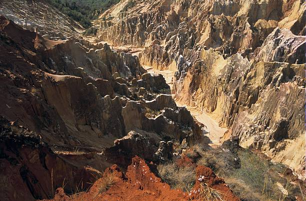
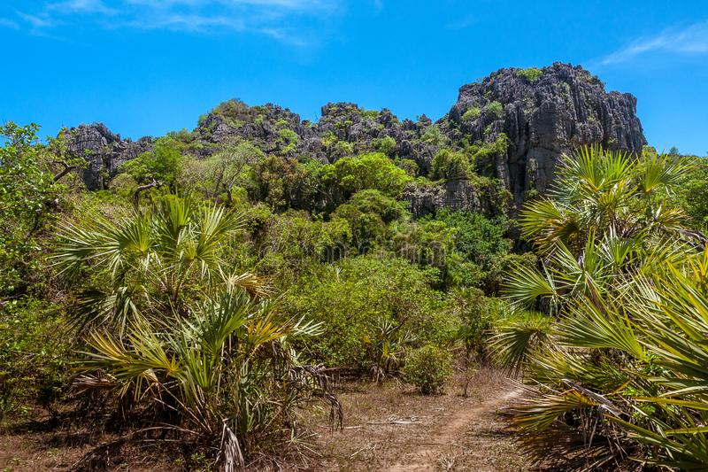

Le nord de Madagascar
A peu prés 10 jours
Antananarivo ~ Nosy-Bé
Explorez le Nord de Madagascar
TOUR NORD vous offre l'opportunité de découvrir en un seul endroit les plus belles beautés de Madagascar. Le circuit Nord vous réserve bien d'autres surprises avec sa faune et sa flore diversifiées et endémiques que l'on ne trouve qu'à Madagascar, c'est l'endroit idéal pour la faune et la flore, comme les oiseaux, les lémuriens, les BAOBAB, les caméléons, le BROOKESIA MINIMA le plus petit caméléon du monde avec moins d'un pouce, le TSINGY d'ANKARANA, le TSINGY ROUGE
Le circuit Nord vous offre aussi la meilleure plage de Madagascar, la plus grande baie du monde. La mer d'émeraude avec son eau turquoise. Les 3 baies .
TOUR NORD comprend NOSY BE. L'île volcanique de Nosy Be a tous les ingrédients que vous recherchez avec son sable blanc, son eau turquoise et ses merveilleux fruits de mer. C'est le point de départ idéal pour des croisières vers des archipels paradisiaques.
Ankarafantsika
Situé dans la région Boeny, dans le nord-ouest de la Grande Île, le Parc National d’Ankarafantsika est délimité à l’est par la rivière Mahajamba et à l’ouest par le fleuve Betsiboka. Le parc est traversé par la Route Nationale 4 et couvre une superficie de 136 000 hectares. Ankarafantsika était autrefois dénommé Station forestière d’Ampijoroa. Il est réputée pour son lac, ses oiseaux et ses tortues.

Ankarana
Situé au nord de lîle, le Parc National d'Ankarana s'étend sur 18 220 hectares. Cette réserve naturelle et animale recense plus de 60 espèces différentes de reptiles et amphibiens, 96 espèces d'oiseaux et plus de 330 espèces végétales. Région montagneuse constituée de calcaire, le massif s'achève à l'ouest avec une falaise impressionnante s'étendant sur 25 kilomètres de long et surnomée "le mur de l'Ankarana".

Nosy-Be: Nosy-Komba
Nosy Komba qui veut dire « Île aux lémuriens » est la deuxième principale île de l’archipel de Nosy Be. Elle est également connue pour abriter de nombreux lémuriens considérés comme sacrés par les habitants de l’île. Venez découvrir les paysages grandioses qui la façonnent ainsi que les nombreuses activités et sports nautiques que l’on peut y faire.Nosy Komba est l’île la plus peuplée après Nosy Be avec près de 4000 habitants, elle n’est seulement qu’à 15 minutes de Hell Ville en bateau.

Nosy-Be: Nosy-Iranja
Nosy Iranja est composée de deux îlots : Nosy Iranja Be et Nosy Iranja Kely. Ces deux bouts de terre sont reliés par un banc de sable immaculé d’environ 2 km. À marée basse vous pourrez profiter de ce lieu incroyable mais attention à ne pas vous faire surprendre lorsque la marée monte! Laissez vous bercer par la beauté des paysages, une eau turquoise entourant le lagon laisse refléter la lumière du soleil et fait scintiller la mer. Ce lieu paisible ravira les amoureux de tranquillité et de dépaysement qui pourront s’adonner s’ils le souhaitent à toutes formes d’activités aquatiques et terrestres.

Nosy-Be: Nosy-Tanikely
nosy-tanikely-madagascar
Nosy Antanikely signifie « l’île de la petite terre », nous pourrions même parler d’ilot, elle est inhabitée, les visiteurs viennent en excursion à la journée mais ne peuvent pas dormir sur l’île qui présente également un intérêt paysager pour ceux qui sont moins intéressés par les fonds marins. Depuis 2010, l’accès à l’île est contrôlé.
Un rayon de 700 m autour du phare délimite la zone de réserve naturelle.
Les infrastructures sur place sont très modestes : un accueil, une aire de pique-nique, un centre d’interprétation, des sanitaires.